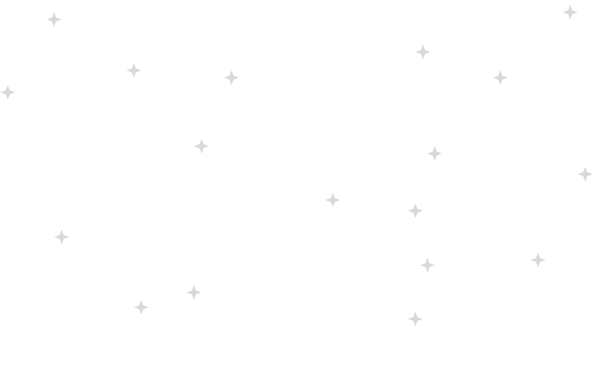
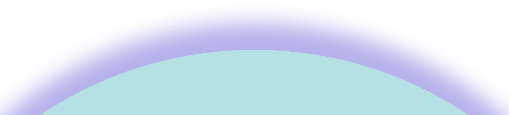
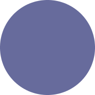
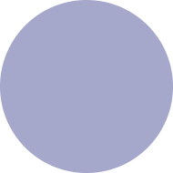
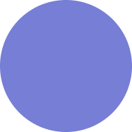

  
May 7
1961

Apollo I
I'm some content about Apollo I in a box

Apollo II
I'm some content about Apollo I in a box

Apollo III
I'm some content about Apollo I in a box
The Artemis Era
Lunar Gateway
Beyond the Moon